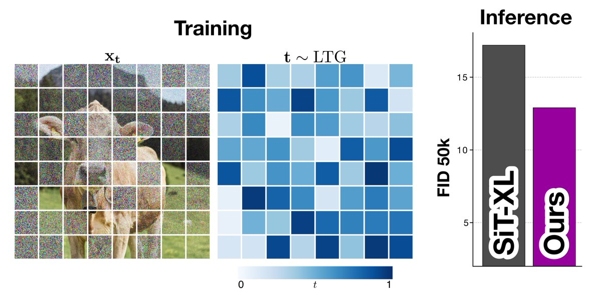
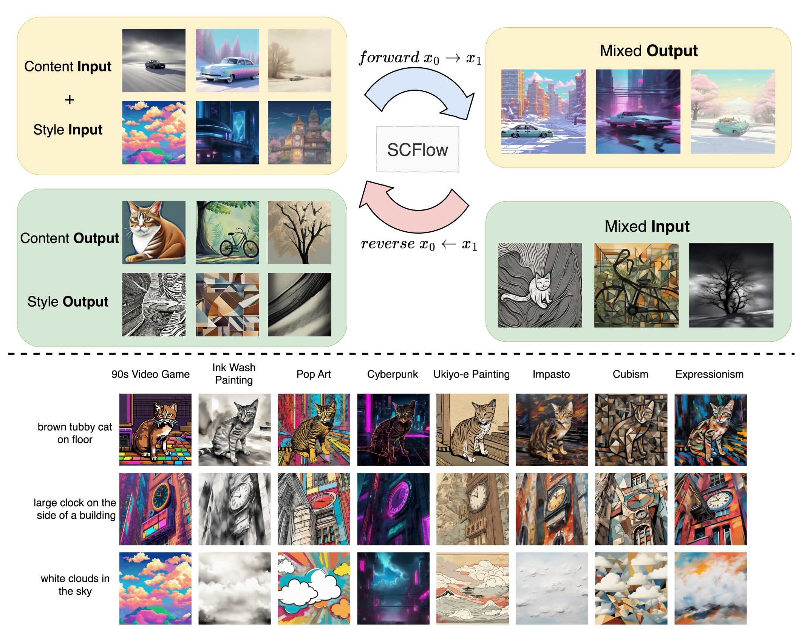
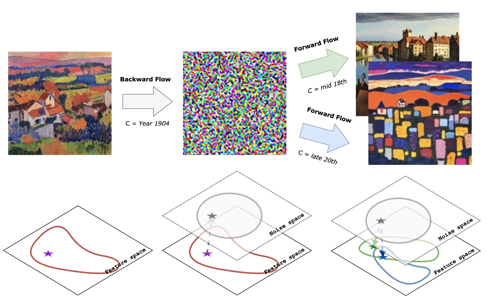
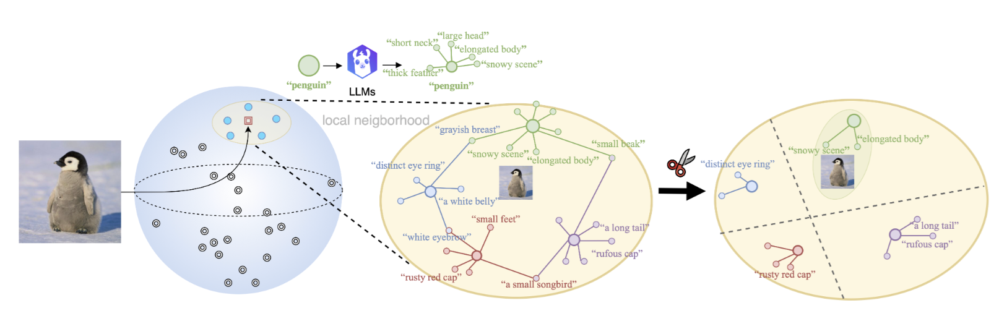
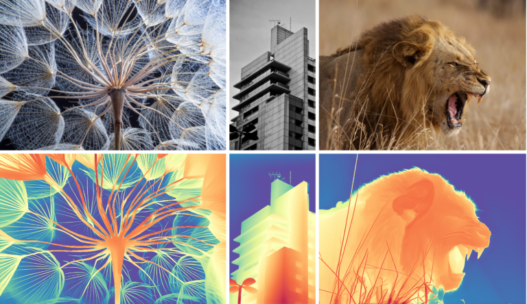
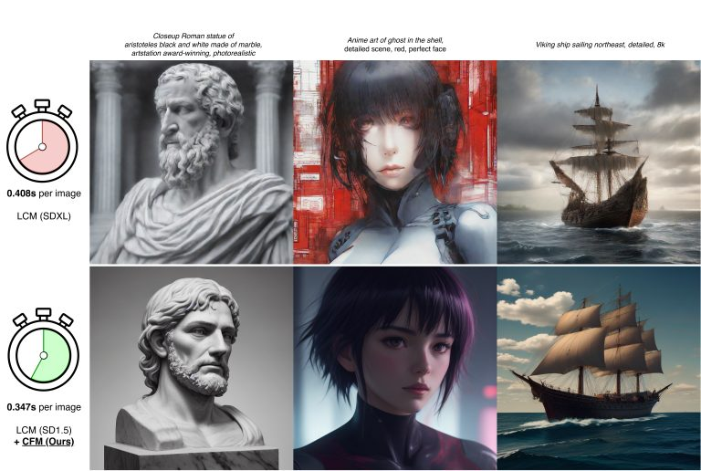
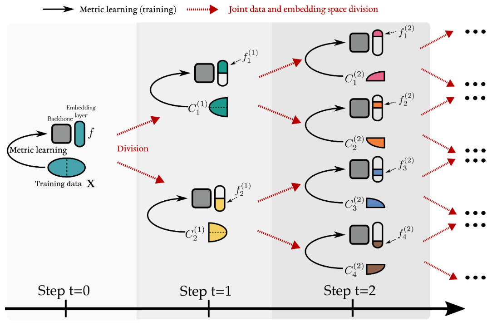

Denoising, Fast and Slow: Difficulty-Aware Adaptive Sampling for Image Generation
Johannes Schusterbauer, Ming Gui, Yusong Li, Pingchuan Ma, Felix Krause, Björn Ommer.
CVPR 2026
Hi, I'm Pingchuan 🐴.
I am a final-year MCML PhD student in the Computer Vision & Learning Group at the University of Munich, under the supervision of Prof. Björn Ommer.
My research sits at the intersection of representation learning and generative AI. I work on multimodal representation learning, especially alignment and distributional relationships in vision-language models; generative modeling, including diffusion and flow-based models; and model repurposing, where pretrained generative models are used for tasks beyond image synthesis.
Earlier in my research, I worked on deep metric learning and style transfer, studying robust visual representations and how style can be defined and edited from a computer vision perspective.
Research / Applied Scientist, and ML Research Engineer roles starting in 2026.
Selected projects from my recent work. For a full list of publications, please see my Google Scholar profile.

Johannes Schusterbauer, Ming Gui, Yusong Li, Pingchuan Ma, Felix Krause, Björn Ommer.
CVPR 2026

Pingchuan Ma*, Xiaopei Yang*, Ming Gui, Yusong Li, Felix Krause, Johannes Schusterbauer, Björn Ommer.
ICCV 2025

Pingchuan Ma*, Ming Gui*, Johannes Schusterbauer, Xiaopei Yang, Olga Grebenkova, Vincent Tao Hu, Björn Ommer.
ICCV 2025

Pingchuan Ma*, Lennart Rietdorf*, Dmytro Kotovenko, Vincent Tao Hu, Björn Ommer.
AAAI 2025

Ming Gui, Johannes Schusterbauer, Ulrich Prestel, Pingchuan Ma, Dmytro Kotovenko, Olga Grebenkova, Stefan A. Baumann, Vincent Tao Hu, Björn Ommer.
AAAI 2025, Oral

Johannes Schusterbauer*, Ming Gui*, Pingchuan Ma*, Nick Stracke, Stefan A. Baumann, Björn Ommer.
ECCV 2024, Oral

Artsiom Sanakoyeu, Pingchuan Ma, Vadim Tschernezki, Björn Ommer.
TPAMI 2021